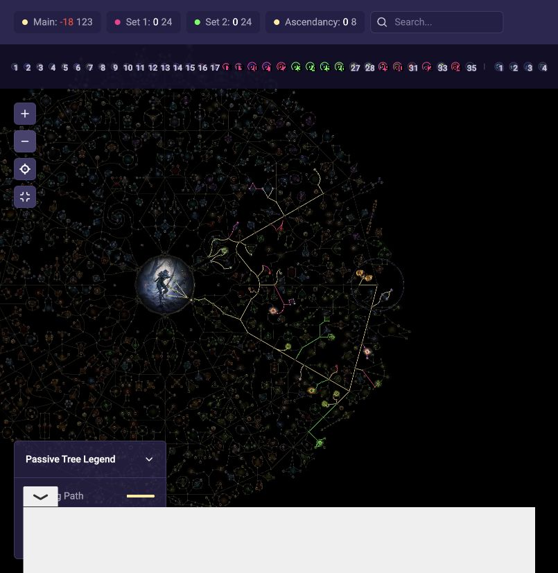

冰霜射击
我的快照
显示等级 18 · 实际品质与启用状态未核
元素军械 Ⅱ快速攻击 Ⅱ霜咬 Ⅱ分叉冻结
当前目标默认连接
元素军械 Ⅱ霜咬 Ⅱ快速攻击 Ⅱ分叉冻结
武器组：武器组Ⅰ。作者未明确设置的等级或品质不填满值。
主冰霜射击与狙击已有对应辅助组合；先保住能工作的输出。防御配置没齐，不靠换一个构筑名称自动解决。
复核行动单的配套情景：寒冰之捷30＋幻影射手60＋风舞者30＋20%品质幽灵舞步25＝145精魂。快照164只说明账面可能够，不能证明实际预留和开启状态。
当前有战斗狂怒。不要把所有新旧常驻一起开；准备按目标替换后，再核对冰尖箭矢和产球变化。
狙击的“盲点”需要敌人被致盲。当前头盔的自身致盲不能代替；快照中的龙卷射击少了作者的致盲Ⅱ。先确认其他来源或可用辅助孔，不把未知天赋推断成一定没有来源。
显示等级 18 · 实际品质与启用状态未核
武器组：武器组Ⅰ。作者未明确设置的等级或品质不填满值。
显示等级 18 · 实际品质与启用状态未核
武器组：武器组Ⅰ。作者未明确设置的等级或品质不填满值。
显示等级 16 · 实际品质与启用状态未核
武器组：武器组Ⅰ。作者未明确设置的等级或品质不填满值。
显示等级 16 · 实际品质与启用状态未核
武器组：武器组Ⅱ。作者未明确设置的等级或品质不填满值。
显示等级 17 · 实际品质与启用状态未核
武器组：武器组Ⅰ。作者未明确设置的等级或品质不填满值。
显示等级 16 · 实际品质与启用状态未核
武器组：两组共同常驻／以实际设置为准。作者未明确设置的等级或品质不填满值。
快照未见此技能。先核配套，不直接把“未见”解释成游戏内不能用。
武器组：两组共同常驻／以实际设置为准。作者未明确设置的等级或品质不填满值。
快照未见此技能。先核配套，不直接把“未见”解释成游戏内不能用。
武器组：两组共同常驻／以实际设置为准。作者未明确设置的等级或品质不填满值。
显示等级 18 · 实际品质与启用状态未核
武器组：两组共同常驻／以实际设置为准。作者未明确设置的等级或品质不填满值。
显示等级 19 · 实际品质与启用状态未核
武器组：两组共同常驻／以实际设置为准。作者未明确设置的等级或品质不填满值。
冰尖箭矢：短暂引信 Ⅰ → 元素军械 Ⅱ → 范围扩大 Ⅱ → 远射 Ⅱ
战斗狂怒：能量球激增 Ⅱ
这不是立即删除指令。完成防御技能、精魂和产球衔接前，先保留能工作的现有配置。
作者参考树94级，你的角色84级。当前未取得完整分配和武器组，所以不指定洗点清单，也不机械认定“还差10点”。这张图是目标参考，不是你的实际已点树。

获得相当于伤害 (9–15)% 的额外冰霜伤害
获得相当于伤害 (9–15)% 的额外闪电伤害
作者保存的绑定在其选点列表中；不代表你已拥有相同孔位或珠宝。
看原截图 ↗范围内的核心天赋额外给予：获得相当于伤害 (2-4)% 的额外冰霜伤害
作者保存的绑定在其选点列表中；不代表你已拥有相同孔位或珠宝。
看原截图 ↗刷图缺蓝可先准备一颗有击杀回蓝词缀的蓝玉；作者正文在供蓝备选中举2%击杀回蓝。没有击杀的首领不能只靠它，仍要测药剂、印记及持续消耗。
优先拾取或比较已有该词缀的珠宝成品；蓝玉这个底材名称本身不保证回蓝。不要在唯一可用珠宝上先赌删改。
暂时没有时，先用合格魔力药剂与现有恢复，按实际消耗调整连接；不要为了插差珠宝花很多绕路点。
先确认人物树有已分配且能用的珠宝孔，再比较回蓝与其余有效词条；不是装备增幅孔、也不是技能辅助孔。
暴击攻击路线比较攻击、投射物、有效元素伤害、弓攻速，以及攻击暴击率和攻击暴击伤害；法术限定词缀不作攻击收益。
拾取或比较成品，先有几条真正有效属性即可。取得更好珠宝时替换现有孔，不按不同图标数量增加孔位。
缺特殊珠宝时继续合适的普通输出／资源珠宝。当前不把特殊珠宝列入本轮三项优先采购。
普通珠宝不照普通防具的六词缀工艺操作；品质和精炼材料另查物品类别，宝石匠棱镜不用于人物珠宝。
它的额外伤害来自珠宝自身合适词缀，不按附近大点数量放大。作者后期目标可追两条额外伤害；当前展示有几条就按面板读，不能自动补第二条。
来自深渊相关取得途径；也可在可交易环境比较实物。不是拿普通珠宝按通用精华升黄就能做出该暗金。
没有合适的就继续普通输出珠宝。缺此珠宝不需要为了展示同名先买无用词缀组合。
限定1颗；占用一个实际已分配孔。各属性掷值范围不是必得最高值，不把其他候选也同时算入。
额外伤害词缀要看实际半径内已分配的对应核心天赋。小天赋的其他效果和核心天赋的额外伤害分开；孔离节点近不代表都生效。
对应特殊遗物“绝望的联盟”与扎罗克试炼路线，或可交易的成品；遗物条件、消耗与实际实物要先核对，不当普通随机珠宝掉落保证。
只有单条合用额外冰伤也可以作为比较对象；双额外伤害是后续目标。没有合适覆盖位置时继续普通珠宝，不先退点凑半径。
限定1颗。示例：若实物写每个覆盖核心天赋获得3%额外伤害，覆盖且已分配3个，合计该词缀为9%；这不是最终技能伤害固定提高9%。实际位置、半径及节点状态以游戏内核对。